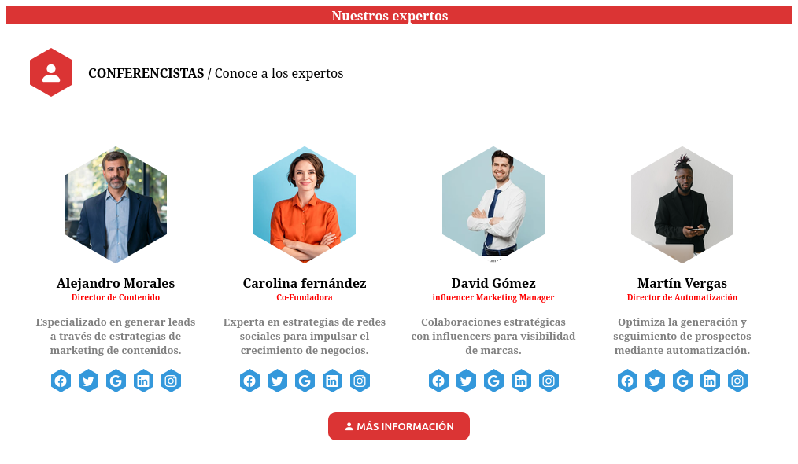
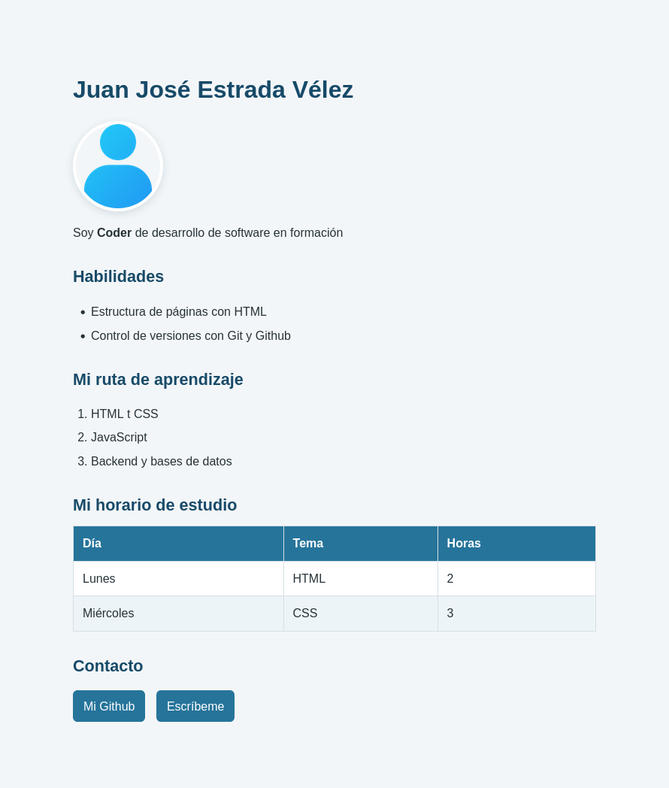

Página: Nuestros Expertos
Se desarroló una página estática mediante HTML y CSS, donde se puso en práctica la maquetación del sitio, la organización de elementos y diseño básico de la web
Ver en vivoColaboré en el desarrollo de una plataforma web para gestionar clientes y tareas. Implementé componentes de interfaz con React, desarrollé endpoints con Node.js y Express, y trabajé con una base de datos PostgreSQL. También participé en revisiones de código, pruebas y corrección de errores.
Experiencia simulada para una actividad académica

Se desarroló una página estática mediante HTML y CSS, donde se puso en práctica la maquetación del sitio, la organización de elementos y diseño básico de la web
Ver en vivo
Vimos por primera vez algunas etiquetas de html como los títulos, las listas, las tablas, los links y además practicar un poco de estilos de css
Ver en vivo